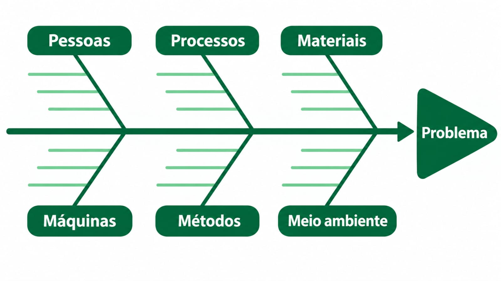
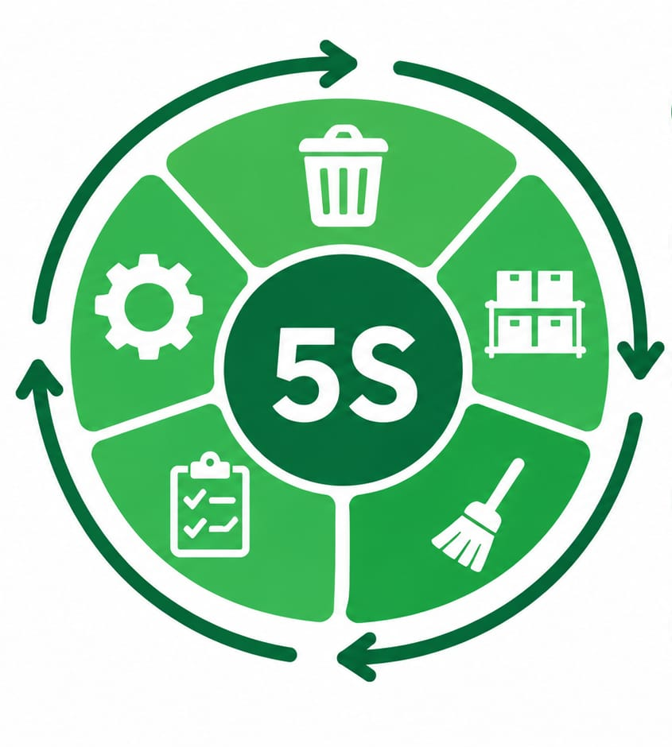
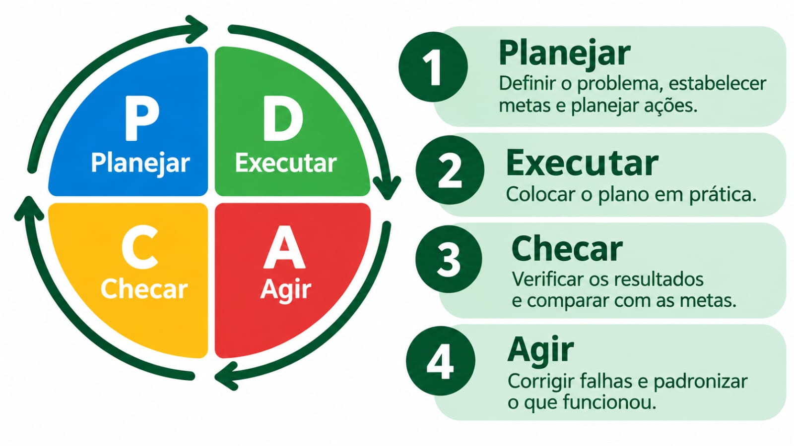
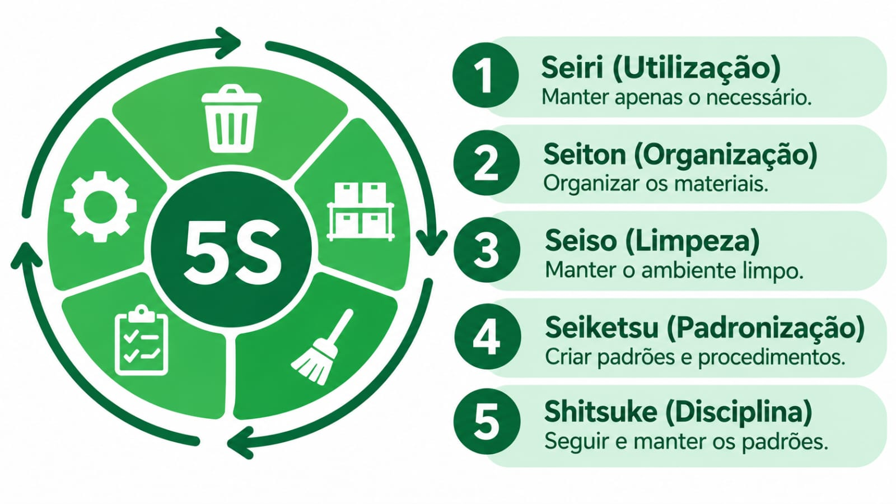

PDCA
Método de melhoria contínua, com 4 etapas.

Planejar
Definir o problema, estabelecer metas e planejar ações.
Executar
Colocar o plano em prática.
Checar
Verificar os resultados e comparar com as metas.
Agir
Corrigir falhas e padronizar o que funcionou.
Ishikawa (Espinha de Peixe)
Ferramenta para identificar as possíveis causas de um problema.

5S
Método de organização do ambiente de trabalho. São 5 sensos.

Seiri Utilização
Manter apenas o necessário.
Seiton Organização
Organizar os materiais.
Seiso Limpeza
Manter o ambiente limpo.
Seiketsu Padronização
Criar padrões e procedimentos.
Shitsuke Disciplina
Seguir e manter os padrões.
Resumo visual
PDCA e 5S em um olhar.


Vamos conversar sobre a sua empresa?
Fale com a nossa equipe e receba uma proposta de diagnóstico.
Entrar em contato